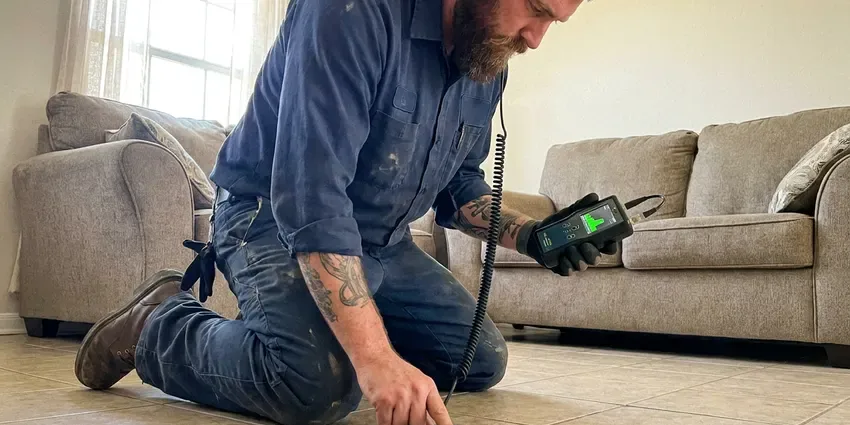

Flood Restoration in Winooski, VT
CKV Plumbing handles flood restoration in Winooski, VT from the pump-out through drying, sanitizing and rebuild.
- Rapid Flood Water Removal
- Portable Extraction
- Licensed & Insured
- Daily Moisture Readings
Fast Flood Restoration in Winooski, VT.
We take flood calls at night and on weekends, since water does not wait.
Flood Cleanup and Drying for Winooski, VT Homes
CKV Plumbing treats flood water as contaminated and handles it carefully. Wet drywall, insulation and flooring come out, surfaces get treated, and drying is monitored until the building can be rebuilt.
Work we handle every week:
- Antimicrobial treatment, odor control and structural drying
- Mold prevention with antimicrobial treatment
- Moisture mapping with meters and thermal cameras

Additional Plumbing Maintenance Services in Winooski, VT
Our maintenance and specialty plumbing services in Winooski, VT catch small problems before they become emergencies.


Customers
Why Choose CKV Plumbing for Flood Restoration in Winooski, VT?
Drying a flooded home is about numbers, not feel. Each day we read the walls, framing and subfloor and compare those to a dry reference elsewhere. When the numbers match, we pack up.
- Pro-Grade Equipment, Submersible pumps, truck-mounted extractors and commercial dehumidifiers on every job.
- Clear Pricing, You see the estimate before work starts, with line items you can follow.
- Moisture Mapping, Meters and thermal cameras show where water is hiding.
Citywide Coverage
Downtown, the suburbs and rural homes on wells and septic all fall in our Winooski area. Rural homes add septic and well concerns, since a flooded septic tank and a well cap underwater both need attention before the house is safe to use. We look at those too.
Experienced Team
Restoration technicians on our crew are trained in flood cleanup, contamination handling and structural drying. Working next to our plumbers, they dry the structure while the plumbing gets fixed. No waiting between trades.
Safety-First Approach
Contaminated water needs protective gear every time. Our crews wear gloves, boots, eye protection and respirators where needed, and we keep family and pets out of the work area until surfaces are disinfected and dry. Pets stay away.
Trusted Certified Winooski Plumbing Services Professionals
At CKV Plumbing, we are proud to offer certified plumbing services throughout Winooski, VT. Those papers on the wall mean something. Our plumbers hold recognized industry credentials, and they follow strict safety and quality rules on every repair, installation and maintenance call we run.
Call Us Now PHCC Plumbing Contractor Recognition
PHCC Plumbing Contractor Recognition Better Business Bureau (BBB) Accreditation
Better Business Bureau (BBB) Accreditation Angi Certified Pro
Angi Certified Pro ISO 9001 Quality Management Certification
ISO 9001 Quality Management CertificationWater Out to Walls Up Flood Service in Winooski, VT
Garage and Ground-Level Flooding in Winooski, VT
Garages take the brunt of runoff because they sit at driveway level. Garage flooding can ruin heater burners, laundry machines, stored items and the lower drywall. We check the heater first. Ruined units get replaced.

Sewage Backup Flood Restoration in Winooski
Overloaded sewer systems during heavy storms can push sewage back up through floor drains. It needs careful removal, disinfection and disposal of every porous material it reached. The drain gets cleared. Antimicrobial goes on before drying.
Sanitization and Odor Removal in Winooski
Flood odor comes from bacteria growing in wet materials. Our flood restoration process in Winooski removes the source, disinfects every surface the water touched, and runs HEPA air scrubbers to clean the air while drying continues. Masking sprays do not work. The smell leaves once the materials are dry and clean.
Commercial Flood Restoration in Winooski, VT
Stores and offices in Winooski, VT lose money every day they are closed after a flood. Phased work, overnight drying and enough equipment for a big floor help you reopen sooner. Your hours come first. You get a report each day.
Storm Flood Cleanup in Winooski
Heavy storms can drop a lot of rain in a short time, sending runoff into garages, patios and living spaces. Ice dams and frozen ground in late winter can send meltwater toward foundations, making a working sump pump important. When the ground cannot absorb it, runoff heads for the lowest door or window well. Pump-out comes first. Then mud and silt get shoveled out.
Insurance Claims Assistance for Flood Damage in Winooski, VT
Flood claims run on documentation. CKV Plumbing photographs the water line and the damage before we touch it, logs moisture readings by room each day, and writes an itemized scope. Insurers ask for it. We do not file the claim, but we can talk with your adjuster about why each wall was cut and each floor was removed.
Sewage Backup Cleanup in Winooski
Sewage is the dirtiest water a home can take in. We suit up, pull out sewage-soaked porous materials and disinfect what stays before drying. Waste gets bagged. A backwater valve can keep it from happening again.

Plumbing Repairs After Flooding in Winooski, VT
Sometimes the plumbing caused the flood, and sometimes the flood broke the plumbing. We repair burst lines, swap flooded water heaters, clear floor drains and replace failed sump pumps. We test before leaving. Water heaters from Rheem and Bradford White are on our trucks.
Local Flood Restoration Near Me in Winooski, VT
After a storm or burst pipe floods your home, help needs to arrive fast. Our crews are based nearby and keep pumps, extractors and drying equipment loaded and ready to go during storm season. Faster arrival limits damage.
Residents and businesses across Winooski call us after storms and pipe breaks. Clay soils in river valleys drain poorly and can hold water against foundations, so sump systems are common in low-lying homes. Our crews have seen how that ground condition affects drying, and we plan equipment and timing around it from the first day. It changes the setup.
CKV Plumbing at a Glance
- Fully licensed plumbing team covering Winooski, VT
- Same-day appointments and 24/7 emergency response
- Upfront, flat-rate pricing before work begins
- 4.8-star rated by 553+ Vermont customers
Winooski Map
Winooski Information
- Population
- 8,251
- Area codes
- Local
- Service area
- Winooski and towns within a 40 mile drive
- Nearby
- Burlington, Essex Junction, South Burlington, Shelburne
Sudden storms, hard ground and runoff from nearby drainage areas can flood Winooski, VT homes with little warning, so prompt flood restoration protects your property and health.
Talk to a Plumber
Call CKV Plumbing for reliable plumbing work done by licensed pros in Winooski, VT.
Our Specialized Plumbing Services in Winooski, VT
At CKV Plumbing, you get every kind of plumbing service from one company across Winooski, VT. From leak detection to full system installs, our team works fast and charges fair prices on homes and commercial properties alike. Explore our core services below:


How Flood Restoration Works in Winooski, VT
Most flood jobs follow the same basic order, though the timing depends on the water and the materials.
Call for a Price
Call (802) 209-5139 and tell us how much water is present and where it came from. We dispatch a crew and give you safety tips until we arrive.
Remove and Sanitize
We pump out water, remove mud and damaged materials and sanitize affected areas. Everything is documented for your insurance claim.
Dry and Rebuild
Drying equipment runs until moisture levels are safe. Then we repair plumbing, drywall and flooring to restore your space.
Frequently Asked Questions About Flood Restoration in Winooski
Costs in Winooski, VT depend on how deep the water got, how many rooms it reached and what it carried in. A small clean water flood caught early might run $1,500 to $4,000, while a basement flood with tear-out and rebuild can reach $10,000 to $30,000. Depth drives the price. You get a written estimate.
Basic extraction and drying generally do not need permits. Major structural repairs, electrical work or plumbing replacement usually do, and the Winooski building department sets the rules for each type of work. Permits are handled by us.
Extraction, drying and basic repairs usually run 3 to 7 days. Large floods with mold or a finished basement can take a few weeks start to finish. You get a timeline.
Standard homeowner's policies usually exclude flooding from outside surface water. Outside floods usually need a flood policy, and inside plumbing failures are more often covered. Check your policy.
Stay safe and avoid electrical hazards. Turn off power and water if safe, and photograph everything. Then call a restoration crew to start water removal before the drywall wicks the flood water any higher up the wall.
Peeling paint, visible mold spots and warped flooring are the usual signs. Stained walls, lingering odors or loose baseboards also point to trapped water. Thermal cameras find it.
Pumping out usually takes a few hours. Drying generally runs 3 to 5 days, more for concrete, hardwood or cold basements. Repairs take longer.
Water removal and drying usually take three to seven days depending on the extent of flooding. Repairs may add days or weeks. We give you a timeline after the first assessment, and we update it as the readings show how fast things are drying.
What People Are Saying About Our Plumbing Experts?

Rachel N.
Hard water was leaving white crust on every faucet and our dishwasher was struggling. The tech tested the water, recommended a softener sized for a family of five, and installed it with a bypass valve in one afternoon. The spots on our glasses are gone.
Water Softener · Essex Junction, VT
Mark T.
The floor drain in our office break room backed up every few weeks. The plumber ran a cable, then put a camera down and found roots at a joint about thirty feet out. Seeing it on the screen made the decision easy.
Drain Cleaning · St. Albans, VTMegan L.
Our upstairs tub drained so slowly that every shower turned into a bath. CKV Plumbing pulled a wad of hair out of the stopper and then snaked the line past the trap. Three months later it still drains fast.
Drain Cleaning · Essex Junction, VTGreg S.
I manage a small strip center with six tenants. CKV Plumbing handles our annual backflow testing and fixed a recurring clog in the shared sewer line that had been backing into the nail salon. Their reports come in clean and on time.
Commercial Plumbing · Middlebury, VT
Tyler J.
We bought a taller comfort height toilet for my dad, who just had knee surgery. The plumber pulled the old one, found the flange was cracked, and replaced it before setting the new bowl. Took about two hours.
Toilet Installation · South Burlington, VTLisa C.
Water was pouring out from under the washing machine on a holiday weekend. CKV Plumbing talked me through closing the valves over the phone and had a plumber at the house within ninety minutes. It was a burst fill hose.
Emergency Plumbing · Shelburne, VT